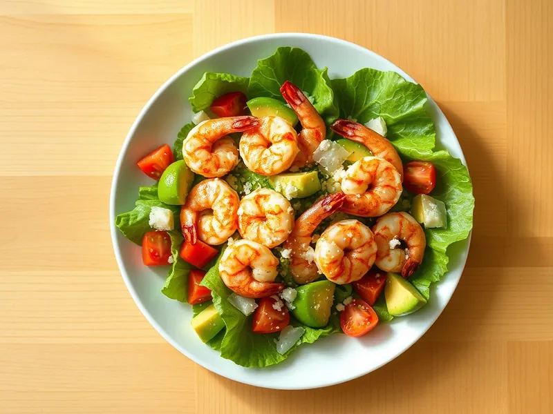

Фото: Иллюстрация ИИ, Cloudflare Workers AI
Тёплый салат с креветками и авокадо
Обжаренные в чесноке креветки с авокадо, помидорами и листьями салата
20 мин2 порц.460 ккал на порциюБ 33 · Ж 31 · У 15Средиземноморская кухня
Продукты на 2 порц.
- Креветки300 г
- Авокадо1 шт
- Помидоры2 шт
- Салат листовой80 г
- Чеснок2 зуб.
- Оливковое масло2 ст. л.
- Лимон0,5 шт
- Пармезан по желаниюпо вкусу
- Соль0,5 ч. л.
- Перец чёрный молотыйпо вкусу
Как готовить
- Разморозьте и очистите креветки, обсушите полотенцем.
- Нарежьте помидоры дольками, авокадо кубиками и сбрызните его лимонным соком. Листья салата порвите руками и выложите на тарелки.
- Разогрейте 1 ст. л. масла на среднем огне, обжарьте раздавленный чеснок 1 минуту и выньте его.
- Выложите креветки и жарьте на сильном огне по 1,5-2 минуты с каждой стороны, пока они не станут розовыми и не закрутятся.
- Разложите горячие креветки на салат с помидорами и авокадо, полейте оставшимся маслом и соком лимона, посолите, поперчите и посыпьте пармезаном.
Совет. Не пережаривайте креветки: если они свернулись в тугое кольцо, они уже жёсткие. Подходят и варёно-мороженые, их достаточно прогреть 1 минуту.